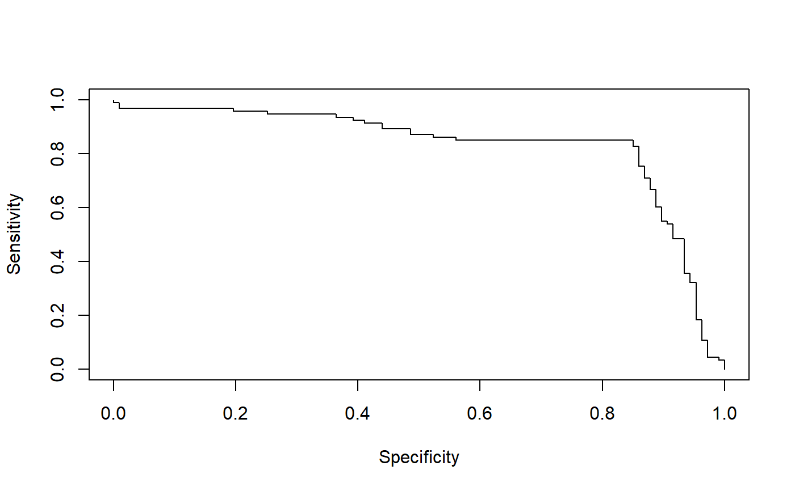

All kinds of predictor evaluations are performed using this function.
performance(prediction.obj, measure, x.measure = "cutoff", ...)
| prediction.obj | An object of class |
|---|---|
| measure | Performance measure to use for the evaluation. A complete list
of the performance measures that are available for |
| x.measure | A second performance measure. If different from the default,
a two-dimensional curve, with |
| ... | Optional arguments (specific to individual performance measures). |
An S4 object of class performance.
Here is the list of available performance measures. Let Y and \(\hat{Y}\) be random variables representing the class and the prediction for a randomly drawn sample, respectively. We denote by \(\oplus\) and \(\ominus\) the positive and negative class, respectively. Further, we use the following abbreviations for empirical quantities: P (\# positive samples), N (\# negative samples), TP (\# true positives), TN (\# true negatives), FP (\# false positives), FN (\# false negatives).
acc:Accuracy. \(P(\hat{Y}=Y)\). Estimated as: \(\frac{TP+TN}{P+N}\).
err:Error rate. \(P(\hat{Y}\ne Y)\). Estimated as: \(\frac{FP+FN}{P+N}\).
fpr:False positive rate. \(P(\hat{Y}=\oplus | Y = \ominus)\). Estimated as: \(\frac{FP}{N}\).
fall:Fallout. Same as fpr.
tpr:True positive rate. \(P(\hat{Y}=\oplus|Y=\oplus)\). Estimated as: \(\frac{TP}{P}\).
rec:Recall. Same as tpr.
sens:Sensitivity. Same as tpr.
fnr:False negative rate. \(P(\hat{Y}=\ominus|Y=\oplus)\). Estimated as: \(\frac{FN}{P}\).
miss:Miss. Same as fnr.
tnr:True negative rate. \(P(\hat{Y} = \ominus|Y=\ominus)\).
spec:Specificity. Same as tnr.
ppv:Positive predictive value. \(P(Y=\oplus|\hat{Y}=\oplus)\). Estimated as: \(\frac{TP}{TP+FP}\).
prec:Precision. Same as ppv.
npv:Negative predictive value. \(P(Y=\ominus|\hat{Y}=\ominus)\). Estimated as: \(\frac{TN}{TN+FN}\).
pcfall:Prediction-conditioned fallout. \(P(Y=\ominus|\hat{Y}=\oplus)\). Estimated as: \(\frac{FP}{TP+FP}\).
pcmiss:Prediction-conditioned miss. \(P(Y=\oplus|\hat{Y}=\ominus)\). Estimated as: \(\frac{FN}{TN+FN}\).
rpp:Rate of positive predictions. \(P( \hat{Y} = \oplus)\). Estimated as: (TP+FP)/(TP+FP+TN+FN).
rnp:Rate of negative predictions. \(P( \hat{Y} = \ominus)\). Estimated as: (TN+FN)/(TP+FP+TN+FN).
phi:Phi correlation coefficient. \(\frac{TP \cdot TN - FP \cdot FN}{\sqrt{ (TP+FN) \cdot (TN+FP) \cdot (TP+FP) \cdot (TN+FN)}}\). Yields a number between -1 and 1, with 1 indicating a perfect prediction, 0 indicating a random prediction. Values below 0 indicate a worse than random prediction.
mat:Matthews correlation coefficient. Same as phi.
mi:Mutual information. \(I(\hat{Y},Y) := H(Y) - H(Y|\hat{Y})\), where H is the (conditional) entropy. Entropies are estimated naively (no bias correction).
chisq:Chi square test statistic. ?chisq.test
for details. Note that R might raise a warning if the sample size
is too small.
odds:Odds ratio. \(\frac{TP \cdot TN}{FN \cdot FP}\). Note that odds ratio produces Inf or NA values for all cutoffs corresponding to FN=0 or FP=0. This can substantially decrease the plotted cutoff region.
lift:Lift value. \(\frac{P(\hat{Y}=\oplus|Y=\oplus)}{P(\hat{Y}=\oplus)}\).
f:Precision-recall F measure (van Rijsbergen, 1979). Weighted harmonic mean of precision (P) and recall (R). \(F = \frac{1}{\alpha \frac{1}{P} + (1-\alpha)\frac{1}{R}}\). If \(\alpha=\frac{1}{2}\), the mean is balanced. A frequent equivalent formulation is \(F = \frac{(\beta^2+1) \cdot P \cdot R}{R + \beta^2 \cdot P}\). In this formulation, the mean is balanced if \(\beta=1\). Currently, ROCR only accepts the alpha version as input (e.g. \(\alpha=0.5\)). If no value for alpha is given, the mean will be balanced by default.
rch:ROC convex hull. A ROC (=tpr vs fpr) curve
with concavities (which represent suboptimal choices of cutoff) removed
(Fawcett 2001). Since the result is already a parametric performance
curve, it cannot be used in combination with other measures.
auc:Area under the ROC curve. This is equal to the value of the
Wilcoxon-Mann-Whitney test statistic and also the probability that the
classifier will score are randomly drawn positive sample higher than a
randomly drawn negative sample. Since the output of
auc is cutoff-independent, this
measure cannot be combined with other measures into a parametric
curve. The partial area under the ROC curve up to a given false
positive rate can be calculated by passing the optional parameter
fpr.stop=0.5 (or any other value between 0 and 1) to
performance.
aucpr:Area under the Precision/Recall curve. Since the output
of aucpr is cutoff-independent, this measure cannot be combined
with other measures into a parametric curve.
prbe:Precision-recall break-even point. The cutoff(s) where
precision and recall are equal. At this point, positive and negative
predictions are made at the same rate as their prevalence in the
data. Since the output of
prbe is just a cutoff-independent scalar, this
measure cannot be combined with other measures into a parametric curve.
cal:Calibration error. The calibration error is the
absolute difference between predicted confidence and actual reliability. This
error is estimated at all cutoffs by sliding a window across the
range of possible cutoffs. The default window size of 100 can be
adjusted by passing the optional parameter window.size=200
to performance. E.g., if for several
positive samples the output of the classifier is around 0.75, you might
expect from a well-calibrated classifier that the fraction of them
which is correctly predicted as positive is also around 0.75. In a
well-calibrated classifier, the probabilistic confidence estimates
are realistic. Only for use with
probabilistic output (i.e. scores between 0 and 1).
mxe:Mean cross-entropy. Only for use with
probabilistic output. \(MXE :=-\frac{1}{P+N}( \sum_{y_i=\oplus}
ln(\hat{y}_i) + \sum_{y_i=\ominus} ln(1-\hat{y}_i))\). Since the output of
mxe is just a cutoff-independent scalar, this
measure cannot be combined with other measures into a parametric curve.
rmse:Root-mean-squared error. Only for use with
numerical class labels. \(RMSE:=\sqrt{\frac{1}{P+N}\sum_i (y_i
- \hat{y}_i)^2}\). Since the output of
rmse is just a cutoff-independent scalar, this
measure cannot be combined with other measures into a parametric curve.
sar:Score combinining performance measures of different characteristics, in the attempt of creating a more "robust" measure (cf. Caruana R., ROCAI2004): SAR = 1/3 * ( Accuracy + Area under the ROC curve + Root mean-squared error ).
ecost:Expected cost. For details on cost curves,
cf. Drummond&Holte 2000,2004. ecost has an obligatory x
axis, the so-called 'probability-cost function'; thus it cannot be
combined with other measures. While using ecost one is
interested in the lower envelope of a set of lines, it might be
instructive to plot the whole set of lines in addition to the lower
envelope. An example is given in demo(ROCR).
cost:Cost of a classifier when
class-conditional misclassification costs are explicitly given.
Accepts the optional parameters cost.fp and
cost.fn, by which the costs for false positives and
negatives can be adjusted, respectively. By default, both are set
to 1.
Here is how to call performance() to create some standard
evaluation plots:
measure="tpr", x.measure="fpr".
measure="prec", x.measure="rec".
measure="sens", x.measure="spec".
measure="lift", x.measure="rpp".
A detailed list of references can be found on the ROCR homepage at http://rocr.bioinf.mpi-sb.mpg.de.
# computing a simple ROC curve (x-axis: fpr, y-axis: tpr) library(ROCR) data(ROCR.simple) pred <- prediction( ROCR.simple$predictions, ROCR.simple$labels) pred#> A prediction instance #> with 200 data pointsperf <- performance(pred,"tpr","fpr") perf#> A performance instance #> 'False positive rate' vs. 'True positive rate' (alpha: 'Cutoff') #> with 201 data pointsplot(perf)# precision/recall curve (x-axis: recall, y-axis: precision) perf <- performance(pred, "prec", "rec") perf#> A performance instance #> 'Recall' vs. 'Precision' (alpha: 'Cutoff') #> with 201 data pointsplot(perf)# sensitivity/specificity curve (x-axis: specificity, # y-axis: sensitivity) perf <- performance(pred, "sens", "spec") perf#> A performance instance #> 'Specificity' vs. 'Sensitivity' (alpha: 'Cutoff') #> with 201 data pointsplot(perf)